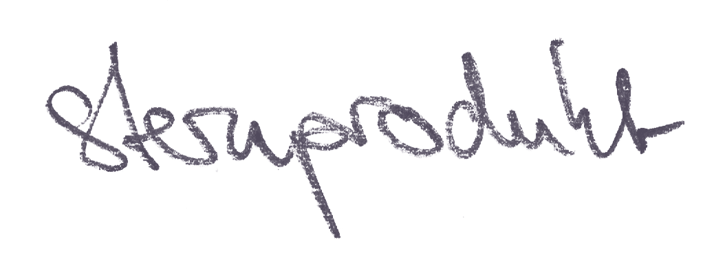

Reiseführer Banat & România — technische Roadmap
Vom Atlas zur QField-App: Datenmodell, Signatur-Pipeline, Cloud-Verteilung und der Vier-Wochen-Plan. Schwerpunkt Banat, Abdeckung ganz Rumänien.
Inhalt
1Architektur: eine Datenquelle, zwei Ausgaben
Alles Fachliche liegt in genau einem GeoPackage — der Single Source of Truth. Die Atlas-Blätter (Druck) und das QField-Projekt (App) sind zwei Builds desselben Bestands — wer die Karte pflegt, pflegt die App mit. Die App bleibt strikt offline-first; alles Live-artige (Fahrpläne, Routing) verlässt sie per Deep-Link in den Browser. Der Schwerpunkt Banat ist kein eigener Datenbestand, sondern eine dichtere Erfassung derselben Layer — Timișoara, Reșița, Recaș, die Hanf-Regionen von 1980.
Die Signaturen kommen aus dem Signaturenkatalog des Atlas (atlas/signaturen.js) und werden einmal als .qml-Stile übersetzt; die Basis liegt im QGIS-Kartensatz (atlas/qgis/basis/). Für die Bodennutzung existiert die CORINE-Pipeline (atlas/geodaten/export-corine.rb).
2Datenmodell: das GeoPackage
Deutsche Layer- und Feldnamen sind der Contract — dieselbe Konvention wie in den Atlas-Datenmodulen; wer ein Feld umbenennt, bricht den Build, nicht die Reise. Auswahlfelder werden in QGIS als ValueMap angelegt, damit QField sie als Auswahlliste zeigt; URL-Felder sind aus dem Formular heraus antippbar.
Alle Layer sind read-only — der Reiseführer konsumiert. Die Basemap reist als MBTiles mit, auf Rumänien beschnitten und gedämpft; Zoomstufen 6–12 landesweit plus 13–14 für das Banat und Bukarest halten das Paket unter einem Gigabyte.
3Bahn: GTFS-Endpoint und Deep-Links
Die eigene API bleibt bewusst klein — zwei statische Endpoints, wöchentlich per Cron-Job neu gebaut. QField braucht davon nichts zur Laufzeit; die Pipeline schreibt die Ergebnisse beim Build als Felder ins GeoPackage.
4Meilensteine: vier Wochen bis zum Praxistest
5Risiken und offene Punkte
- GTFS-Quelle: CFR Călători liefert kein offizielles GTFS — der Feed muss aus Fahrplandaten gebaut werden. Aufwand unklar, deshalb liegt er in der eigenen API und nicht im kritischen Pfad.
- MBTiles-Größe: Zoom 13–14 nur für Banat und Bukarest; wächst der Wunsch nach Detail landesweit, braucht es einen Kachel-Rebuild (halber Tag Rechenzeit).
- Fonts auf dem Gerät: die Branchenkreise beschriften per FontMarker mit Noto Sans Mono — die Schrift muss ins QFieldSync-Paket, sonst fällt Android auf Roboto zurück. (Die Tiegel- und Grundriss-Marker liegen inzwischen als SVG im Kartensatz; Woche 1 wird dadurch kürzer.)
- Deep-Links: infofer.ro kann URL-Parameter ändern; das Feld liegt deshalb in den Daten, nicht im Stil — ein Fix ist ein Sync, kein Release.
- QFieldCloud als Single Point of Failure: fällt die Instanz unterwegs aus, übernimmt Syncthing — und das ist fast der schönere Weg: zwei Geräte tauschen den Projektordner direkt im Hotel-WLAN, kein Server, kein Account, keine Cloud dazwischen. Einmal QR-Code scannen, ab dann syncen sie sich von allein. Einzige Regel (KISS): Syncthing synct ganze Dateien, nicht Attribute — also verteilen, nicht gleichzeitig editieren.